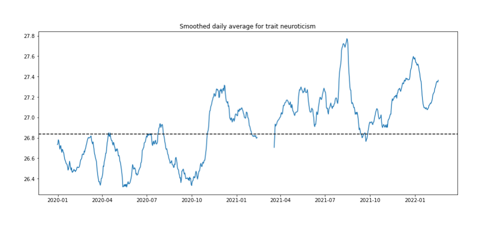

Whether you feel emotionally exhausted by two years of constant norm changes, or you are now a pro with alone time, everyone has their own story about how the pandemic reshaped their day-to-day lives. And if it seems like the pandemic has permanently changed who you are and your outlook on life—it is not just you.
New research suggests that the COVID-19 pandemic has fundamentally changed our personality traits over time.
WHAT THE RESEARCH SHOWS—THE FIVE MAJOR FINDINGS
The model of personality used in the study was the Big Five model, which specifies that people tend to differ individually across five core trait dimensions:
- Openness: To what extent is the individual interested in ideas and aesthetics?
- Conscientiousness: To what extent is the individual orderly, industrious and achievement-oriented?
- Agreeableness: To what extent is the individual driven to be empathic and to comply with social norms?
- Extraversion: To what extent is the individual enthusiastic and assertive?
- Neuroticism: To what extent is the individual volatile and withdrawn?
ON AVERAGE, PEOPLE HAVE BECOME MORE NEUROTIC SINCE THE BEGINNING OF THE PANDEMIC. Neuroticism scores increased most strongly in response to longer-term, cumulative worsening of the pandemic (e.g.cumulative COVID deaths). Neuroticism describes a person's sensitivity to negative emotions, including fear, sadness and anxiety. This finding provides empirical support for widespread reports of the emotional exhaustion and long-term stress that many associate with the pandemic, particularly with respect to health-related risk-taking. “The incomprehensible risks seen during the pandemic may have had a lasting effect on our ability to deal with everyday stress, raising the nationwide level of the trait that is known as Neuroticism—essentially, how much our mental wellbeing can be derailed by everyday stressors,” 